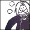

|
 |
Pál Marci küldte ezt a marék
fényképet nektek szeretettel. Egy része saját, más része különféle kiadványokból származik.
Tervezzük egyébként azt is, hogy filmet forgatunk Budapest titkairól, természetesen Marci
idegenvezetésével. Az a mintegy harminc gyárlakó, akik eljöttek tegnap, már tudják, hogy bizony
nagyon érdekes dolgokat tud mesélni. Tudtátok például, hogy a Moszkva téren - azaz a Széll Kálmán
téren - 1914 előtt futball- és teniszpályák voltak? Azt tudtátok, hogy a "betonpillangónak"
csúfolt metróállomásra soha senki nem adott építési engedélyt, és a tervrajzai sincsenek meg sehol?
Hát azt, hogy melyik ház volt a "vörös parlament" 1919-ben, amelynek harmadik emeletéről Prónayék
íróasztalostul hajították ki Korvin-Klein Ottó titkárját a csukott ablakon? (Tudniillik nagyon
kapaszkodott az asztalba a vörös rohadék.) Láthattunk aztán különféle történelmi korokból ott
felejtett falfirkákat, golyók lyuggatta pesti falat a Szalay utcában, a rendőrség épülete mellett,
amelyet a közhiedelemmel ellentétben nem az ostrom során lőttek szét, hanem hadifoglyok százait
végezték ott ki a ruszkik, azért olyan lyukacsos a fal. Emléktábla persze nincs...
Marci
továbbra is szorgalmazza, hogy egy hosszabb, nappali túra keretében nézegessük végig ezeket az
elfelejtett helyeket, a titokban tartott várostörténelmet. Természetesen ez nem fog elmaradni. Addig
is itt van nektek ez a néhány fénykép.
Az
elveszett villamossínek egyike a Ganz-gyár környékén néhány évvel
ezelőtt. Ezeken a síneken már a háború előtt sem volt forgalom. Buda
valamennyi villamosvágánya a Fekete Sas utcai remizbe futott be, ami ma
is áll, de alaposan átalakítva irodaházként működik.
Villamos a Margit híd pesti hídfőjénél a hetvenes években. Jobbra a Fehér Ház,
a háttérben a Parlament.
A Margit-híd felújítása 1935-ben. Figyeljük meg a korlátot! Ma már csak a
szigeti lejárónál ilyen.
Szintén az 1935-ös felújítás során készült fénykép. A kép bal oldalán látható
az egyik öntöttvas kandeláber, amelyet 1945 után nem helyeztek vissza. Ma csak kipusztult virágládára
emlékeztető "kődobozok" árválkodnak a helyükön. Persze a címerek és más ékítmények sincsenek már
meg.
Egy kandeláber a Dunáról nézve
A régi híd
gyönyörű díszeit meg sem közelíti az újjáépítés szocreál funkcionalitása
Zichy Mihály Arany János azonos című verséhez készített Híd-avatás című grafikáján is látszik a kandeláber
A híd régi szerkezete

2005 nyarán ilyen alacsonyan állt a Duna a Margitszigetnél.
Természetesen a roncsvadászok azonnal kutatáshoz láttak.
Ez a kő Szent
Korona díszítette a Margit-híd közepén a szigeti lejáró mellvédjét. Az újjáépítés során nemes
egyszerűséggel belökték a folyóba.
Ilyen állapotban találták meg Pál Marciék hatvan évvel később

Kijött a HírTV, aztán a rendőrség is

A kép bal szélén álló csíkos inges köcsög a hídőr. Ő hívta rá a rendőröket a
csapatra azzal, hogy "lopják a hídról az aranykoronát". Eljárás nem indult, de a koronát elvették,
és ma valahol a Közlekedési Múzeum raktárában hever.
Ilyen állapotban került elő az egyik kandeláber darabja
A hídváz egy darabja
Egy kis mozaik
A Margit-híd
budai hídfője 1962-ben. A síneket egyébként épp ezekben a napokban helyezik át az úttest jobb
oldalára.
Hetvenes évekbeli utcakép
A
Déli pályaudvar régi épülete a Magyar Jakobinusok Terénél, amelyet
eredetileg Endresz György térnek hívtak, hős óceánrepülőnk emlékére.
Ez is a Déli környéke
A Széll Kálmán tér a háború előtt...
... és a hatvanas években
Csúcsforgalom a harmincas években
Moszkva tér megint...
... és ugyanez éjszaka
Így épült a gyalogos felüljáró valamikor a húszas évek végén
És még néhány kép, pár évtizeddel később, a lépcsőről
A régi János kórház
A Retek utca sarka a Fény utcai piac egy részével
A Ganz-gyár
sínhálózatának egy része még a közelmúltban is megvolt. A háttérben a Marxim pizzéria vörös
csillagos cégére.
A Pozsonyi
úton villamos járt...

... ma már
nem jár
| | vissza a főoldalra |  |
| 1 2 3 | |  | | | | | | | | | | | | | | | | | | 

|
| | | | 1 2 3 |  |
|


túraszervező
túra-rss
mi ez?

legjobbak
legolvasottabbak
tartalomjegyzék
rss feed

AboryM
Caesar
Count Grishnackh
cscsabi
eürdüngh
Feki
GyalogKakukk
Ishukone
Kadzseszka
LACI1993
Mini
Muska
Rommel
Segi
Takezó
tommylee
vikcee
|
BlogGép 1.1 (C) 2007-2009 tomcat
nem adom
hülye kérdések elott olvasd el a faq-t
minden, a bombagyar.hu-n és aloldalain közölt tartalom újraközléséhez
a szerkesztõk írásos beleegyezése szükséges
az olvasói kommentárok és levelek nem feltétlenül a szerkesztõk véleményét tükrözik
házirend elolvasása